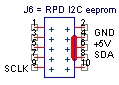
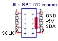
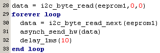
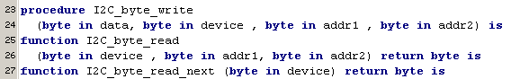

january 2006
RPD I2C Graphical Display
Module that connects a small surplus graphical LCD display (97*35 pixels), from Wouter's shop Voti graphical LCD-09 to the RPD. Apparently this module contains the I2C graphical controler PCF8558 PCF8558_2.pdf Another application with this module can be found here I2C LCD .
 

Finding the correct hardware circuit was done by trial and error, because the specs of the device as a hole, doesn't seem to be same as the specs from the controler. The device should be powered by 3 Volt. The low level output of the controler is specified at a maximum of 0.4 Volt. In that case you can pull up te I2C lines to +3V, connect the PIC pins directly to the controler (PIC runs at 5 Volt), if you set the I2C settings to "SMbus" (Vlow requied = 0.6 Volt). This didn't run very reliable,the PIC could hardly get in contact with the controler. After looking with a scope, the acknowledge pulse from controler was slightly above 0.6 Volt, so the PIC running in SMbus mode will never see it. So I decided to go back to normal I2C-level-mode, and now there was a communication between PIC and controler, although the number of missers was still in order of 0.5%, way too much. Of course this is to be expected, as the I2C-level-mode expects 3.5V to be high. Therefor the dataline is pulled up to +5 Volt, and now it's working perfect (even at 1 MHz, while it's specified maximum at 400 kHz)
k
JALcc macro call

JALcc use

For the moment, the next routines are implemented:

JALcc macro expansion